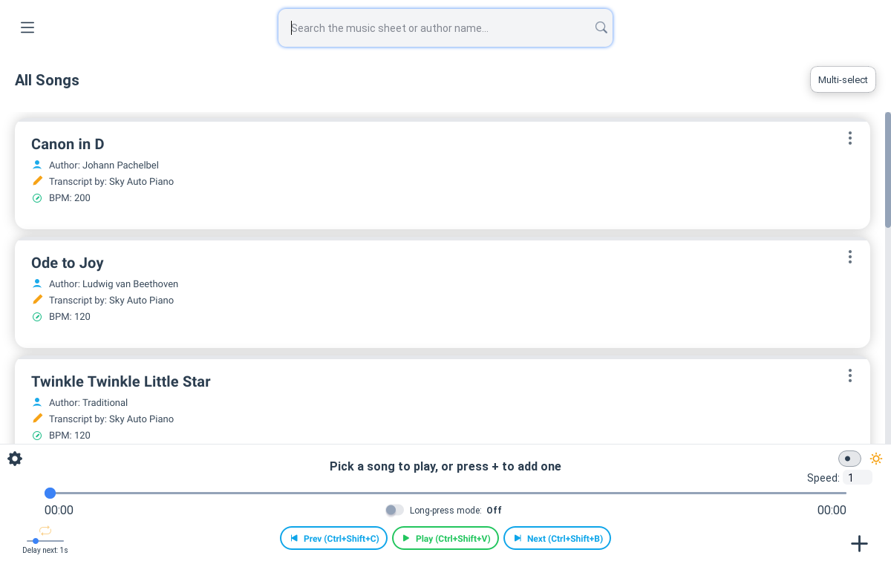
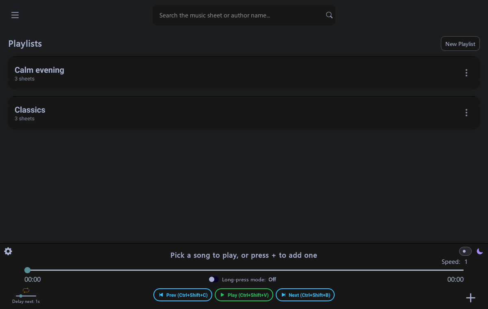
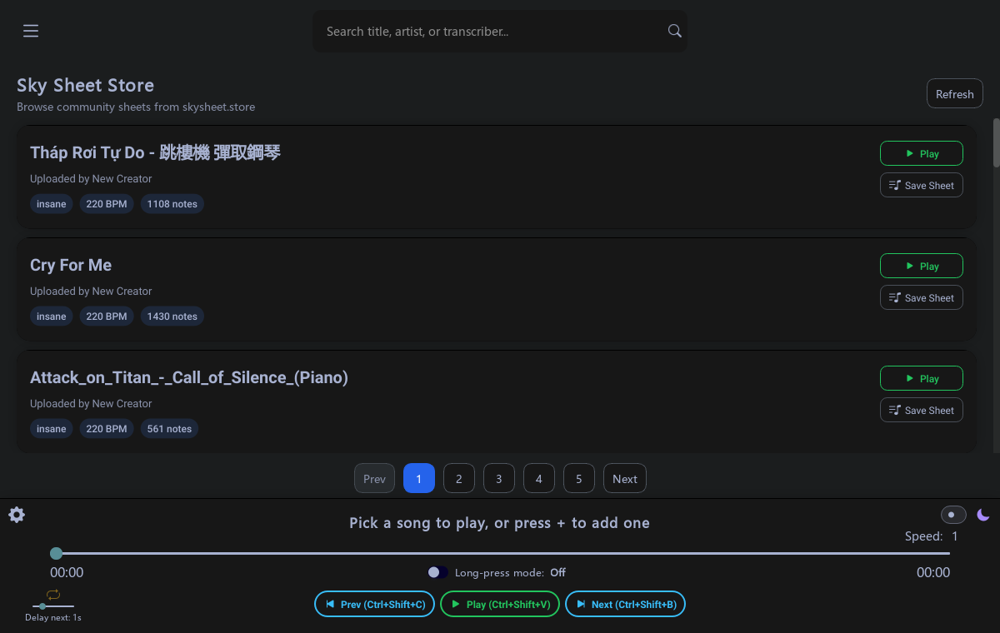
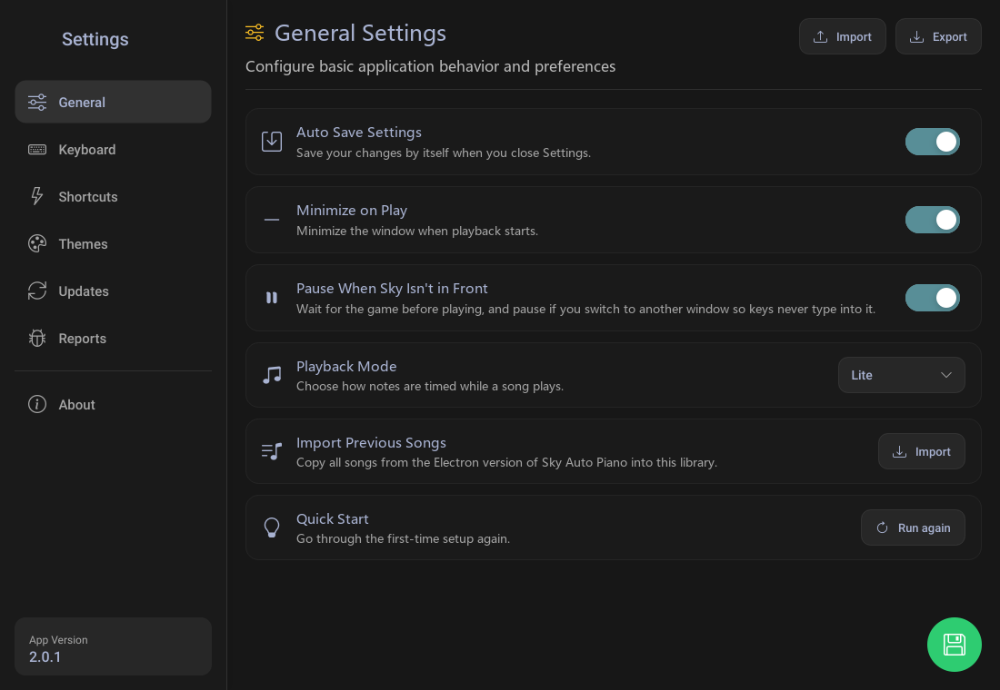
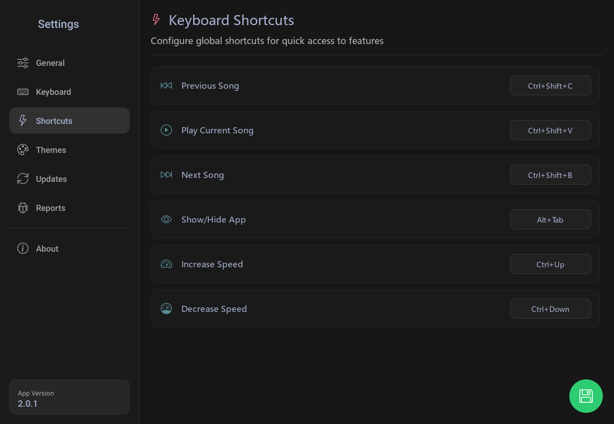
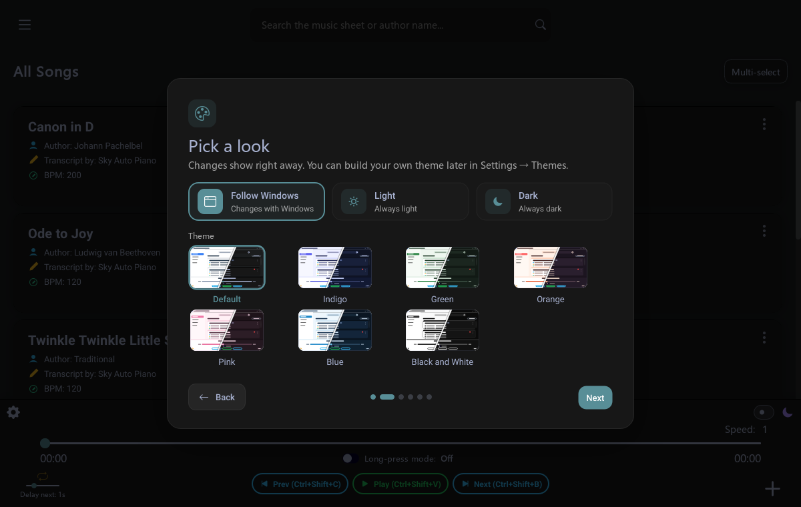

Long-press mode
Holds notes for instruments that sustain, like the violin or Aurora's voice.
Pick a music sheet, press one shortcut, and Sky Auto Piano presses the right keys in the game at the right time.
Windows 10 and 11 64-bit Free and open source

Built for Sky players
A quick tour of what the app does, from your first song to your own theme.
Every sheet you add lands in a searchable library. Pick one, click back into Sky and press Ctrl Shift V. The game plays it while the window stays in front.
Group songs into playlists for a concert or a quiet evening, star the ones you play most, and find what you played last in Recent Play.

Browse community sheets without leaving the app. Play one straight away to try it, or save it to your library with one click.

Songs play on their own high-priority thread. Pick Lite for a lighter PC or Strict for the most accurate timing.

Global shortcuts work while Sky is in front, so you never have to switch windows to play, skip or change the speed.

Follow Windows, or always use light or dark. Pick one of seven built-in themes, or build your own with a live preview of every screen.

A short Quick Start walks you through the look, bringing over your old songs, the playback mode and the shortcuts. Skip it any time and run it again from Settings.

Sheet editor
Fix a wrong note, tighten the timing or write a song from the ground up, then listen before you play it in the game.
The Advanced view shows every key on its own row and every rest as an empty column, so you can see exactly where a song breathes.

The Simple view lays each moment out like Sky's 3×5 keyboard. Pick a tile, tap a key, and you're done.

And the small things
Holds notes for instruments that sustain, like the violin or Aurora's voice.
Repeat one song or the whole list, with a delay you choose between songs.
New versions install with one click and show you what changed.
Moving from the original Sky Auto Piano? Songs, playlists and settings come along.
No account and no data collection. Crash reports stay on your own PC.
If something goes wrong, a report is saved for you to attach to an issue.
Get started
Get SkyAutoPiano-<version>-setup.exe from the latest release.
Run it. You don't need administrator rights, and your old songs can come along.
Sit at an instrument, pick a song, click into the game and press Ctrl Shift V.
Questions
Yes. Sky Auto Piano is free and open source under the MIT license.
No. It's a fan project and isn't made by or connected to thatgamecompany. Use it at your own risk.
No. It only goes online to check GitHub for a new version (you can turn this off) and to show songs in the Store. Crash reports stay on your PC.
No. On first start the app finds your old install and copies your songs, playlists, favorites and settings over. The old app isn't changed.
Only Windows 10 (version 1809 or newer) and Windows 11, 64-bit, for now. Linux support is planned.
Download the app, add a song and press one shortcut.